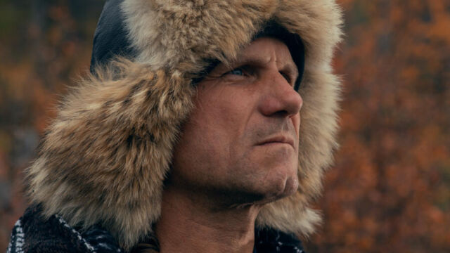
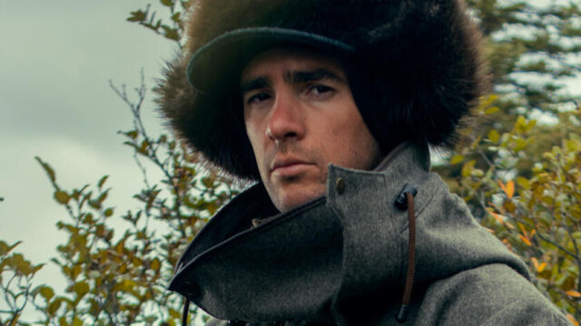
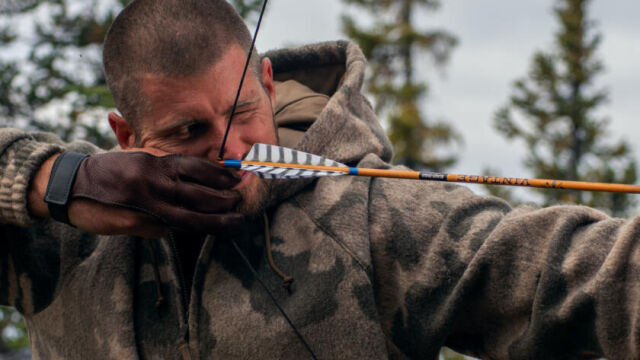
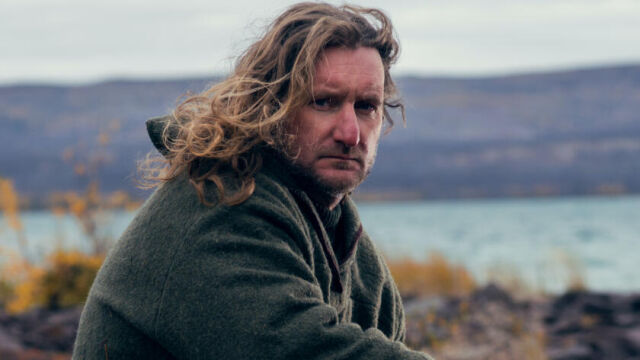
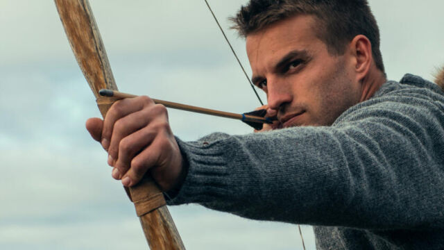

1stWinner
Roland Welker
Hunting Guide
- Lasted
- 100 days
- Age
- 47
- From
- Red Devil, Alaska
Loadout
- Ferro rod
- Gill net
- Pot
- Trapping wire
- Axe
- Saw
- Multitool
- Belt knife
- Bow and arrows
- Sleeping bag
Alone
Million Dollar Challenge · Great Slave Lake, Northwest Territories, Canada · Dropped off 18 Sep 2019 · Premiered 11 Jun 2020

Days each survivalist lasted, in finishing order, and why they tapped out. Every season page uses the same 0–100 day scale so seasons can be compared at a glance.






Who they are, where they're from and the ten items they carried in.
Hunting Guide
Loadout
2ndplaceAncestral Living Skills Instructor
Loadout
3rdplaceWinter Wilderness Expedition Operator
Loadout
4thplacePrimitive Skills Instructor
Loadout
5thplaceSniper & Survival Skills Instructor
Loadout
Biologist
Loadout
Primitive Skills School Owner
Loadout
Homesteader
Loadout
Traditional Bowyer
Loadout
Tool Maker
Loadout
How many survivalists chose each item (items grouped into simplified categories).
Air dates, survivalists remaining at the start of each episode, viewers and IMDb rating.
| Ep | Title & opening quote | Aired | Remaining | Viewers (M) | IMDb |
|---|---|---|---|---|---|
| 1 | Million Dollar Mistake“Whosoever is delighted in solitude is either a wild beast or a god.” — Aristotle | 11 Jun 2020 | — | 1.13 | |
| 2 | The Rock House“Fortitude is the marshal of thought, the armor of the will, and the fort of reason.” — Francis Bacon | 18 Jun 2020 | — | 1.28 | |
| 3 | That Was No Bunny“Life is a walk through the forest. Don't fear the trees; fear what lurks behind them.” — Richelle E. Goodrich | 25 Jun 2020 | — | 1.25 | |
| 4 | The Fly“Let food be thy medicine and medicine be thy food.” — Hippocrates | 2 Jul 2020 | — | 1.36 | |
| 5 | The Rock“Failure is not fatal, but failure to change might be.” — John Wooden | 9 Jul 2020 | — | 1.37 | |
| 6 | The Musk Ox“Chaos was the law of nature; Order was the dream of man.” — Henry Adams | 16 Jul 2020 | — | 1.33 | |
| 7 | Snared“When you reach the end of your rope, tie a knot in it and hang on.” — Franklin D. Roosevelt | 23 Jul 2020 | — | 1.27 | |
| 8 | Up In Smoke“To survive it is often necessary to fight and to fight you have to dirty yourself.” — George Orwell | 30 Jul 2020 | — | 1.25 | |
| 9 | The Wolves“Let me not pray to be sheltered from dangers but to be fearless in facing them.” — Rabindranath Tagore | 6 Aug 2020 | — | 1.24 | |
| 10 | Pins and Needles“Fate leads the willing, and drags along the reluctant.” — Seneca | 13 Aug 2020 | — | 1.55 | |
| 11 | Over the Edge“The best way out is always through.” — Robert Frost | 20 Aug 2020 | 3 | 1.33 |